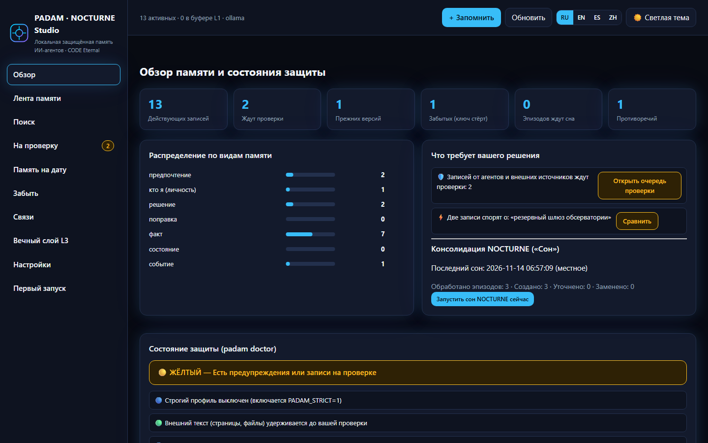

写入零费用、零云端调用
内置混合检索整合 BM25、精确标识符与本地向量，无需付费模型或联网。
基于单个本地 SQLite 文件的三层记忆系统：落盘前自动掩码 API 密钥与 Solana 钱包私钥，拦截可疑指令等待主人审核，区分检索时间与确认时间，并通过销毁每条记录独立的 AES-256-GCM 密钥实现可验证的单条遗忘。
内置混合检索整合 BM25、精确标识符与本地向量，无需付费模型或联网。
LongMemEval-S（470 题）：any@5 97.0%、any@10 99.2%、all@10 93.0%。LoCoMo（10 段对话 1,536 题）：sess_any@5 90.1%（启用 PADAM_RERANK=1 达 91.1%）、sess_any@10 95.5%（95.8%）。
在写入 SQLite 前掩码 20+ 种密钥、Solana 私钥/助记词（保留公开收款地址）与 Luhn 银行卡号。
每条记录拥有独立 AES-256-GCM 密钥。padam forget 永久销毁密钥并生成 JSON/HTML 证明。
当前对话与 padam log 记录的事件流，不直接污染长期事实。
7 类记忆、双时钟机制（last_seen_at 与 last_confirmed_at）、版本链、审核队列与混合检索。
可选上链：Arweave 加密数据包（Turbo）、Solana Memo 默克尔根与 Bitcoin OpenTimestamps 时间戳。
| Records | Write | Search | SQLite size |
|---|---|---|---|
| 1,000 条记录 | 2.7 ms / 条 | 5.4 ms (p95: 6.9 ms) | 4.7 MB |
| 10,000 条记录 | 3.5 ms / 条 | 22.1 ms (p95: 25.2 ms) | 45.2 MB |
| 100,000 条记录 | 5.1 ms / 条 | 145 ms (p95: 160 ms) | 375.2 MB |
